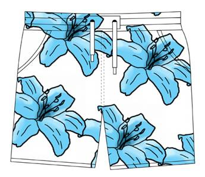

Requires (c) Adobe Photoshop
Open a new document in Photoshop (Ctrl + N) the same size as your output document.
Note, resolution is different if the document is intended for printing: 300dpi
or the web: 72dpi.
Design your pattern or import it from another program (illustrator, etc.).
With the magic wand tool, select the areas of the pattern where you want the network to appear,
Then create a new layer (by default called Alpha 1) in the Layers window:
Delete you selection from this layer to create the mask (Del) :
The white areas show your network, the black areas hide it.
Deselect (Ctrl+D) and save your pattern in Tiff format.
Your pattern is ready to be used in Pattern shop!

Copyright 2009 - Patternshop